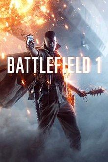

I'm a huge gamer myself, and I'd like to list some of my favorite gaming systems, as well as a game to go with each.
Here is a chart of my favorite gaming systems and their ranking:
| Rank | System |
|---|---|
| #1 | PC |
| #2 | PS4 |
| #3 | Xbox One |
| #4 | "SouljaGame" Gaming Console |
| #5 | Nintendo Switch |

Image from: CyberPowerPC
This one may seem pretty generic, but I've always been a fan of PC gaming over anything on a console. You can get higher framerates and better graphics than console ports, and access to most games (except console exclusives, looking at you Sony).
I also really enjoy the keyboard and mouse control over a controller, except for a few select games (such as fighting games where button mashing is essential).
The game that I most enjoy on PC is Battlefield One. I think that most shooter and FPS games handle much better on PC due to mouse control, which allows for finer tuning. However, this game in particular I love the most on PC, as I own it on both console and PC.
